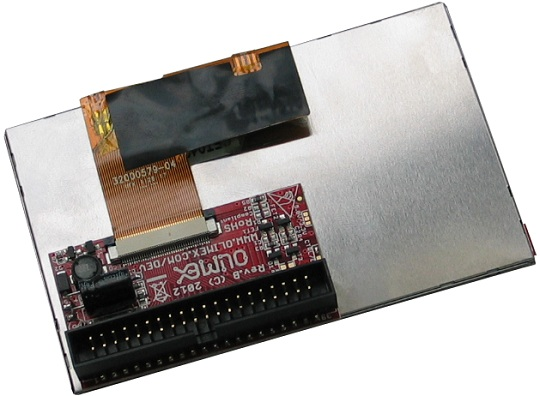

A13-LCD43TS
4.3" LCD screen with backlight and resistive touch screen panel, compatible with A13-OLinuXino and iMX233-OLinuXino
This item is OBSOLETE.
Please use LCD-OLinuXino-4.3TS.

Overview
A 4.3" LCD display with touch screen panel, compatible with Olimex Allwinner and Olimex iMX233 development boards and suitable for GNU/Linux video output.
TFT Panel Features
- Construction: 4.3” a-Si color TFT-LCD, White LED / CCFL Backlight and PCB.
- Resolution (pixel): 480(R.G.B) X272
- Connector for touch screen
- Interface: 40 pin pitch 0.5 FFC
- Power supply voltage: 3.3V single power input. Built-in power supply circuit.
- Viewing Direction:6 o’clock (the wide angle makes it hard for the image to be discolored)
Documents
Hardware
Software
- Please refer to the OLinuXino wiki articles which contain suitable Linux images for the 4.3" display.
FAQ
I bought A13-LCD4.3TS but there is no ready Android for it. Where can I find it?
The display is too small to be used with our latest Android releases.
Please either use Debian or get a 7" or 10" inch display.
I bought A13-LCD4.3TS but when I connect it to the A13-OLinuXino I receive no image on the display. What do I do wrong?
The default A13-OLinuXino image is set for a VGA display and 800x600 resolution.
To use LCD with A13-OLinuXino you need to run a configuration script.
More information might be found here.
I bought A13-LCD4.3TS and the SD card that has Linux image written on it. However the resolution I see on my VGA/LCD is not correct. What am I missing?
You would need to run a configuration script as explained in the wiki article for the respective board.